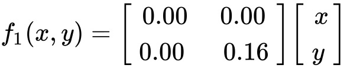
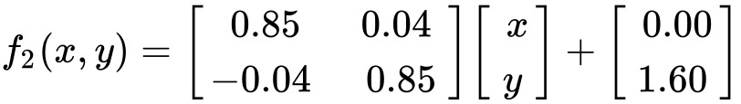
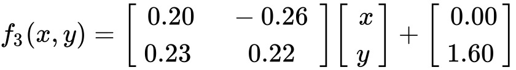
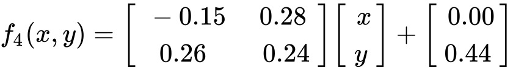

Barnsley Fern
Named after the British mathematician Michael Barnsley.
The Barnsley Fern is made to resemble the black spleenwort.
The fern is made using four affine transformations. The
progams is constanley drawing the fractal. (Remeber to
press the stop button before the clear button to start a
new fern)
Draws the line at the center,making the stem

Draws the points to the right, making more ferns to the top

Rotates the points to the left, makes the leaf to the left

Rotates the point to the right, makes the leaf to the right
